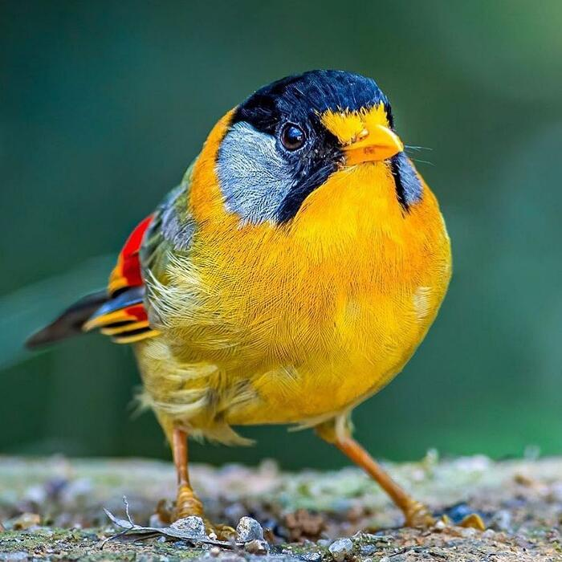

Gli Uccelli sono un mondo tutto da scoprire: tra i loro adattamenti, e il loro modo magnifico di vivere, gli uccelli hanno sviluppato modi interessanti di stare con la natura e tantissime variazioni.

Noi siamo la Pet & Go.
La Pet & Go è incentrata sul distribuire lezioni in altre scuole dando accessibilità aperta sui nostri progetti a tutti i professori/professoresse d'Italia.